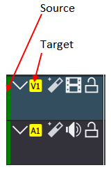
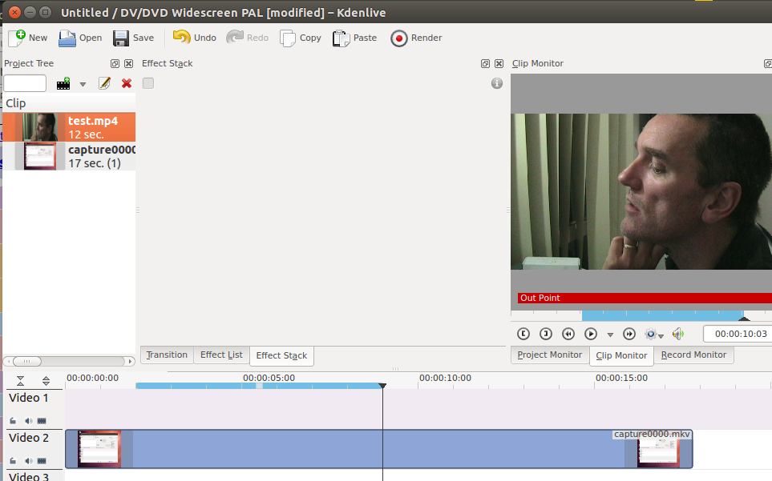
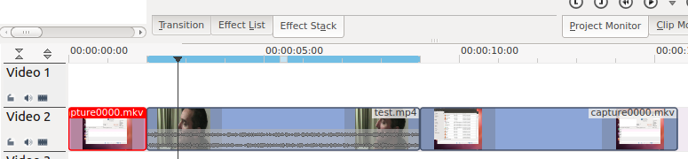

Insert Clip Zone in Timeline¶
Contents
This menu item is available in the Menu on the sub menu. Shortcut is V
Keyboard command “v” and “b”: Since version 19.08 “3 point editing with keyboard shortcuts” is implemented. Source and target has to be activated that the clip gets inserted into the timeline.
More info here: https://kdenlive.org/en/2019/08/kdenlive-19-08-released/
Say you have a 10 sec. zone defined on a clip in Clip Monitor and on the timeline you have a 20 sec. zone defined somewhere. When you press V or select , it will insert the 10 sec. segment of the clip from the Clip Monitor at the beginning of the zone on the timeline. If there happens to be another clip there already, it will overwrite it, completely or partially, depending on how long the existing clip was.
Regions selected on time line and in clip monitor - blue regions.
Select and the section in the clip overwrites the section on the timeline
